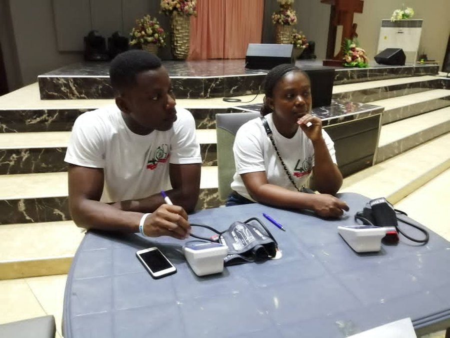

Can Hearing Aids Slow Cognitive Decline? What Studies Show
Hearing loss is now one of the most-cited modifiable risk factors for dementia. Here's what the strongest trial on hearing aids actually found, and who it helps most.

Photo: Sayhi2kojo / Wikimedia Commons / CC BY-SA 4.0
Key takeaways
- Hearing loss is a recognized modifiable dementia risk factor, flagged by the Lancet Commission's major review of prevention evidence.
- A large NIH-funded trial (ACHIEVE) found hearing aids nearly halved cognitive decline over three years, but only in older adults already at higher risk.
- The benefit wasn't seen in a healthier, lower-risk group in that same trial, so hearing aids aren't a universal memory fix.
- Several mechanisms are suspected: cognitive strain from decoding unclear speech, social withdrawal, and changes in brain structure.
- A hearing test is a reasonable, low-risk step for most adults over 50, regardless of what it eventually shows about dementia risk.
If your hearing has quietly gotten worse and you've been putting off doing anything about it, there's now a real reason beyond convenience to reconsider. Can hearing aids slow cognitive decline? The short answer: for some people, the best evidence so far says yes, meaningfully, but not for everyone. Here's what the research actually supports, not the shorthand version that gets repeated in headlines.
Is hearing loss really linked to dementia risk?
Yes, and it's one of the better-established links in this field. The Lancet Commission on dementia prevention, a periodic review that pools the strongest available evidence, has repeatedly named midlife hearing loss as one of the largest modifiable risk factors for later dementia, alongside things like physical inactivity and smoking. That doesn't mean hearing loss causes dementia directly. It means people with untreated hearing loss show up more often in long-term studies as developing cognitive decline sooner than people with normal hearing.
What's changed more recently is the question of whether treating hearing loss actually changes that trajectory, rather than just correlating with it.
What did the ACHIEVE trial find about hearing aids?
The strongest answer so far comes from the ACHIEVE trial, a randomized study funded by the National Institute on Aging and run out of Johns Hopkins. Researchers followed older adults for three years, some fitted with hearing aids and given counseling, others given only general health advice. Among participants who already had other risk factors for cognitive decline, hearing aid use cut the rate of cognitive decline by close to half compared with the control group.
Here's the part that rarely makes it into the headlines: the trial also included a second, healthier group with fewer risk factors, and in that group hearing aids made no measurable difference to cognitive scores over the same period. That's an important nuance. It suggests hearing aids aren't a general brain booster. They appear to matter most for people whose brains are already under some strain from other factors, where removing one more source of strain, in this case the effort of hearing, makes a real difference.
COMPLEX
The memory formula we rate highest in 2026
One formula combined a fully transparent, clinically-dosed label: citicoline, bacopa, phosphatidylserine and B-vitamins, with a 60-day guarantee.
See Today's Price →Why would fixing hearing affect memory and thinking?
No single mechanism is confirmed, but researchers generally point to three candidates working together. First, the "cognitive load" idea: when speech is unclear, the brain spends extra effort just decoding words, leaving less capacity for encoding and recalling information from the conversation. Second, untreated hearing loss tends to push people toward social withdrawal, skipping gatherings and conversations that would otherwise keep the brain socially and verbally engaged, and social isolation is its own well-documented risk factor. Third, some imaging studies find faster shrinkage in certain brain regions among people with untreated hearing loss, though it's genuinely unclear whether that's a cause or an early sign of something else going on.
Treating the hearing loss plausibly interrupts more than one of these pathways at once, which may be part of why the effect in ACHIEVE was large enough to measure in just three years.
Do hearing aids work for everyone, or just some people?
Based on the trial data, the clearest beneficiaries are older adults who already carry other risk factors for cognitive decline, such as cardiovascular disease, limited physical activity, or lower social engagement. If that describes you or someone you're caring for, a hearing test and, if needed, hearing aids look like a genuinely useful, low-risk move. For healthier older adults with few other risk factors, the honest takeaway from ACHIEVE is that hearing aids didn't show a measurable cognitive benefit over three years, even though they're still worth using for the hearing itself, and for quality of life and safety.
Either way, nobody should expect hearing aids to reverse decline that's already underway. The trial measured a slower rate of decline, not an improvement from baseline.
What should you do if you're noticing hearing loss?
Start with an actual hearing test rather than guessing. People routinely underestimate how much their hearing has slipped, partly because the decline is usually gradual and partly because the brain gets surprisingly good at filling in gaps. A baseline test from an audiologist, or an over-the-counter screening if cost or access is a barrier, gives you a real number instead of a hunch.
From there, over-the-counter hearing aids are now widely available in the US for adults who perceive mild to moderate loss, and they're a reasonable, cheaper entry point. More significant or complicated hearing loss usually still calls for a proper fitting. Pair whatever you choose with the basics that protect thinking generally, since hearing is only one piece of the picture; our guide on how to improve your memory covers the rest. If you want the broader research on hearing specifically, we go deeper in hearing loss and dementia risk, and if you're assessing your own risk more generally, see our rundown of early signs of cognitive decline.
Frequently asked questions
Do hearing aids actually slow cognitive decline?
For older adults who already have risk factors for cognitive decline, a major NIH-funded trial found that using hearing aids nearly halved the rate of decline over three years compared with usual care. The same trial found no clear benefit in a healthier, lower-risk group, so the effect appears strongest in people already vulnerable to decline.
Why is hearing loss linked to dementia risk in the first place?
Researchers point to a few possible mechanisms: the brain has to work harder to decode unclear speech, leaving fewer resources for memory; untreated hearing loss often leads to social withdrawal, which is itself a dementia risk factor; and reduced auditory input may accelerate certain patterns of brain shrinkage. None of these is fully proven, and they likely overlap.
How much hearing loss counts as a risk factor?
Most of the research focuses on mild to moderate, untreated hearing loss in midlife and older age, the kind people often dismiss as just getting older. A formal hearing test is the only reliable way to know where you stand, since people routinely underestimate their own hearing loss.
Are over-the-counter hearing aids good enough, or do I need a specialist?
Over-the-counter hearing aids, now widely available in the US for adults with perceived mild to moderate loss, can be a reasonable and far cheaper starting point. An audiologist-fitted device is usually still the better route for more significant loss or complex cases, so get a proper hearing test first either way.
Treat hearing like part of your brain-health routine
Protecting your hearing addresses one real, evidence-backed risk factor. See the memory formulas our editors rate highest for 2026 for the nutritional side.
See the Top 5 Memory Formulas →Related: Hearing loss and dementia risk · Signs of cognitive decline · How to improve your memory · Best memory formulas of 2026